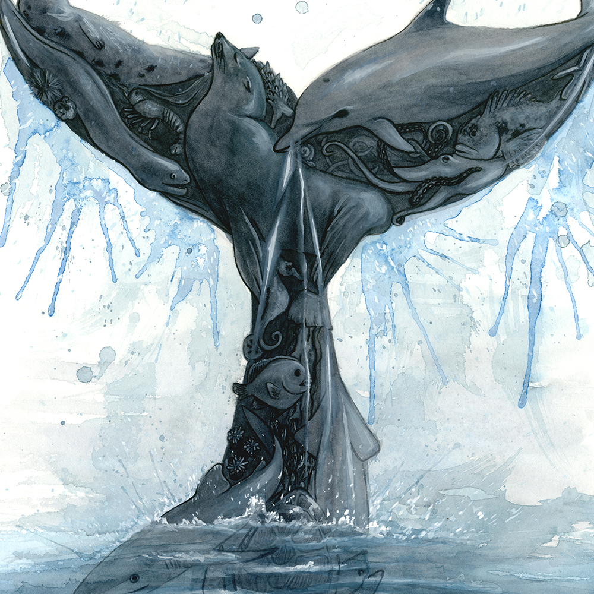
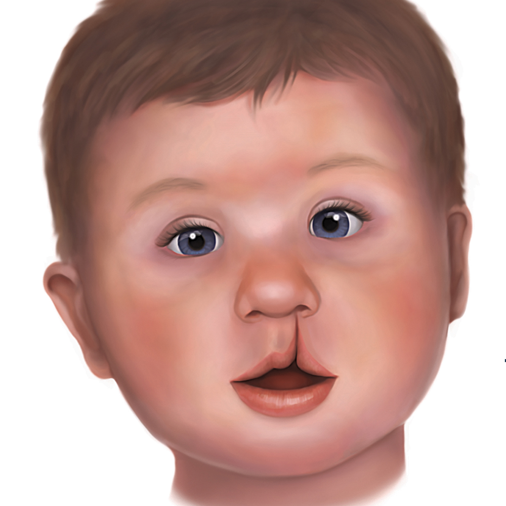
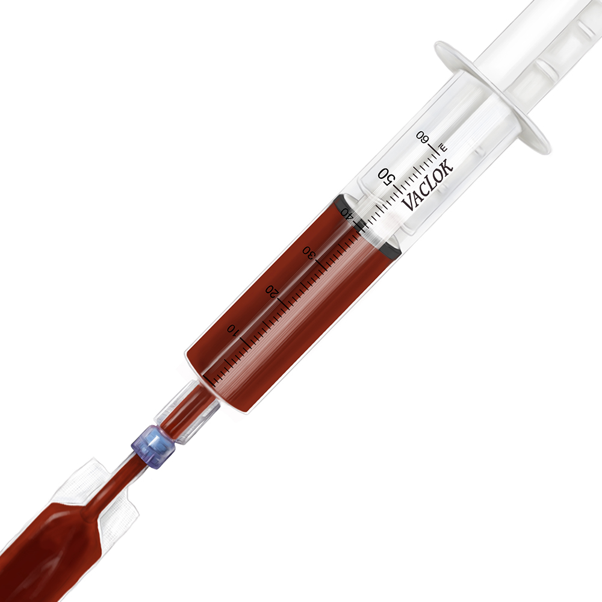

Procyon lotor

Knee Joint

Barn Owl

Straw-Necked Ibis

Salivary Glands
Whale Tail

Columba livia domestica
Tessier Diagram

Lily

Northern Flicker
Syringe and Blood Bag

Feathers

Macaw

I am a full time graphic designer and freelance scientific illustrator. I typically illustrate wildlife and anatomy, with a special interest in ornithology. I graduated from Kendall College of Art and Design and Michigan State University with my BFA in Medical Illustration and a focus in Scientific Illustration. I am skilled in both traditional and digital techniques, including Photoshop, Illustrator, InDesign, watercolor, gouache, pen, and pencil. Color is an inspiration, as well as fine detail.
I am always looking for new opportunities to use my skills for professional projects. Send me an email at caitrausch@gmail.com and we can get to work!
You can follow my work on Instagram and Facebook
Purchase one of a kind original artworks
Purchase prints, apparel, home goods and more at TeePublic and Redbubble.